The Pages
Each page began as a plant I live beside. What remains is the space between its leaves, followed until it no longer had a name. Choose any page and print it at full size on plain, uncoated Letter paper, or print all ten. There is no order.
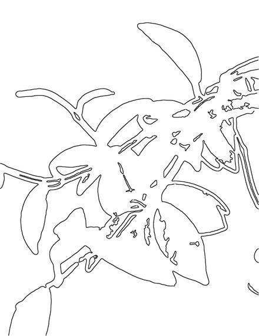
01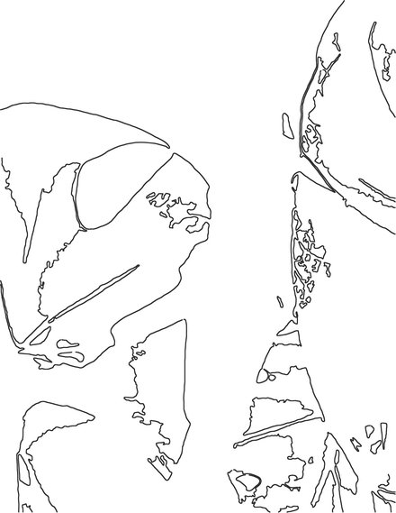
02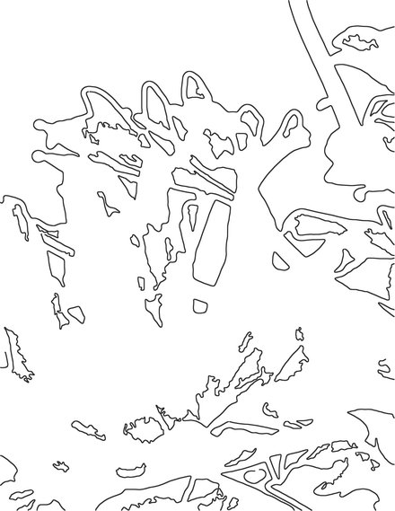
03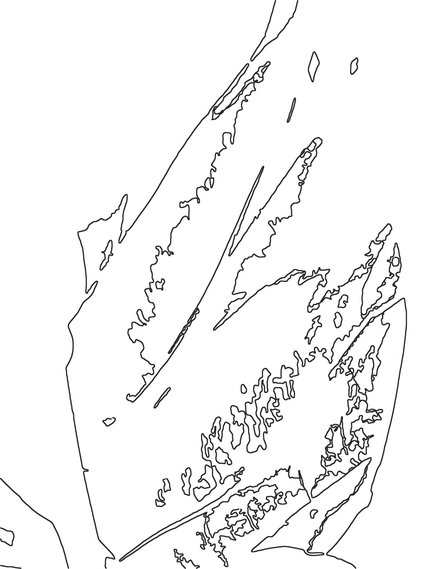
04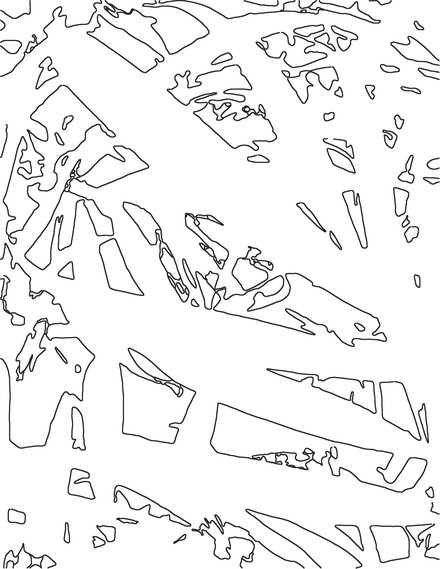
05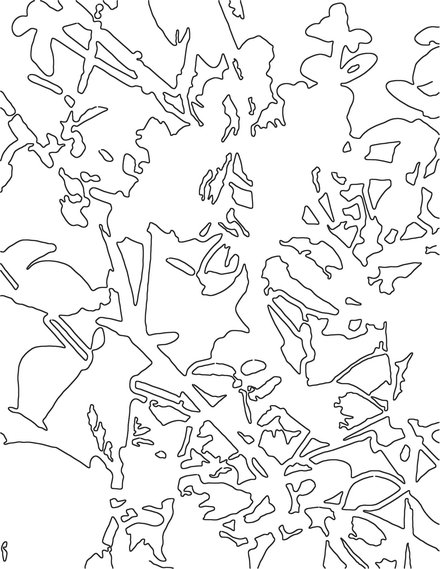
06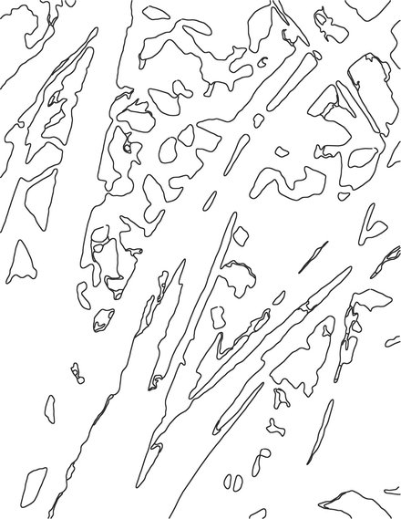
07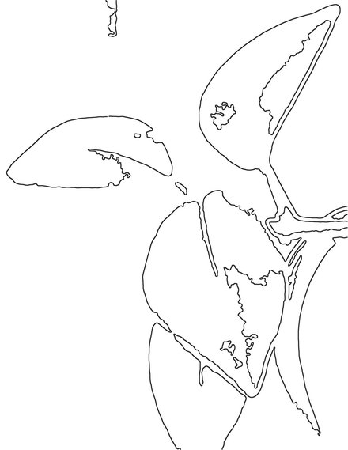
08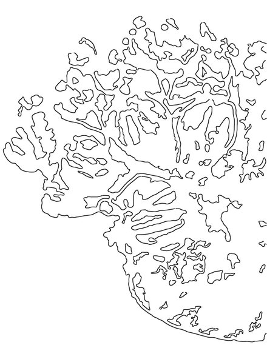
09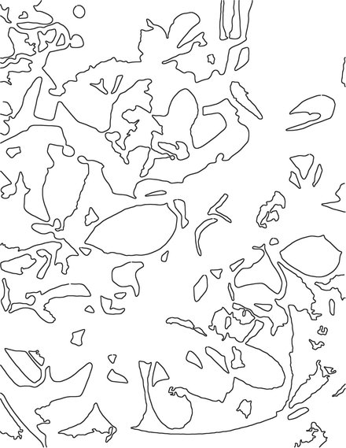
10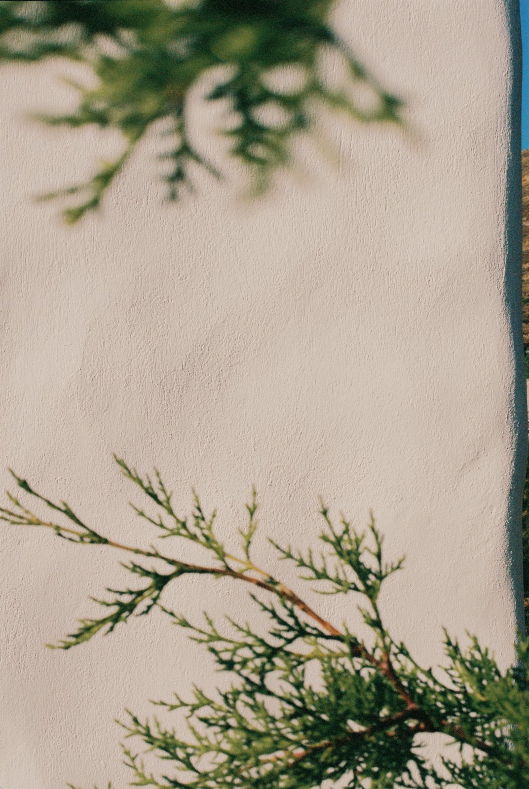
Put a single page on the table and look at it before you pick anything up. The lines run thick in one corner and leave a clearing in another, and your eye will already have gone somewhere without asking you. Start there.
A pencil drawn along one line makes a small dry sound. Watercolour on ordinary paper follows the damp and stops at an edge you didn’t choose. For some minutes you are a person filling in a page. Then, on a good day, the table goes, and the question of whether you are doing it well goes with it, and there is only the line and the place it’s heading. You won’t notice this while it’s happening. You notice afterward.
It doesn’t always come. When it doesn’t, stop, and leave the rest of the page bare. The pages carry no fold lines or marks for what comes next, so that while you colour, colouring is all there is. When the page is dry, folding and sowing is the next step.